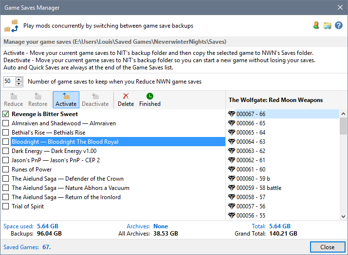
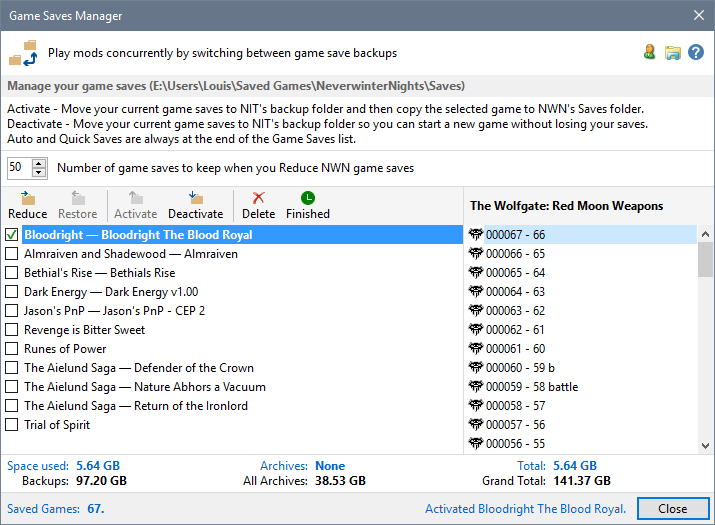

You can backup the current game saves and restore a previous backup in a single operation.
- Select the game saves Backup you want to use and double-click, press Ctrl+A or click Activate.

Note:
You can right-click Activate to uninstall the Mod associated with the current game saves and install the selected Game Save's Mod if it is uninstalled.
Pressing the Control Key when you click or right-click Activate, closes the Game Saves Manager after the selected Game Save has been activated.
- The current game saves are moved to the Tool's Backup folder and the selected Game Save is moved to Neverwinter Nights game saves folder.

Related Topics
Automatic backup of Game Saves
Display Character Summary Information
Open a game save folder with Windows File Explorer
Start a new game
Restore Game Saves from Backup
Switching Game Saves
Reduce the number of NWN Game Saves
Restore archived Game Saves
Delete archived Game Saves
Delete Game Saves
Restoring deleted saves from the Recycle Bin
Link Game Save to Mod name